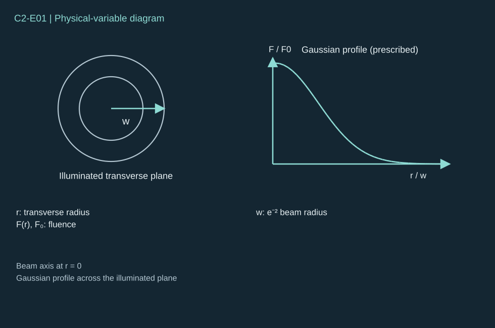
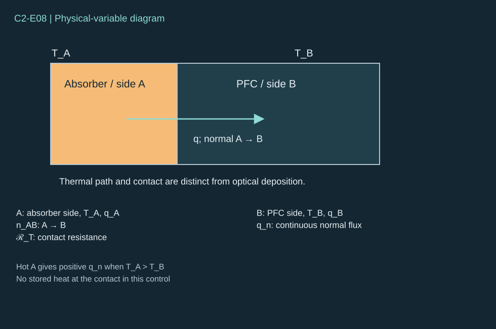
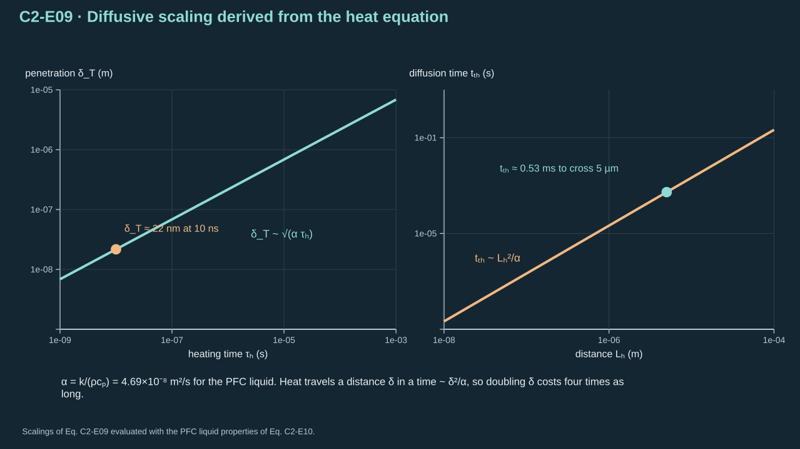
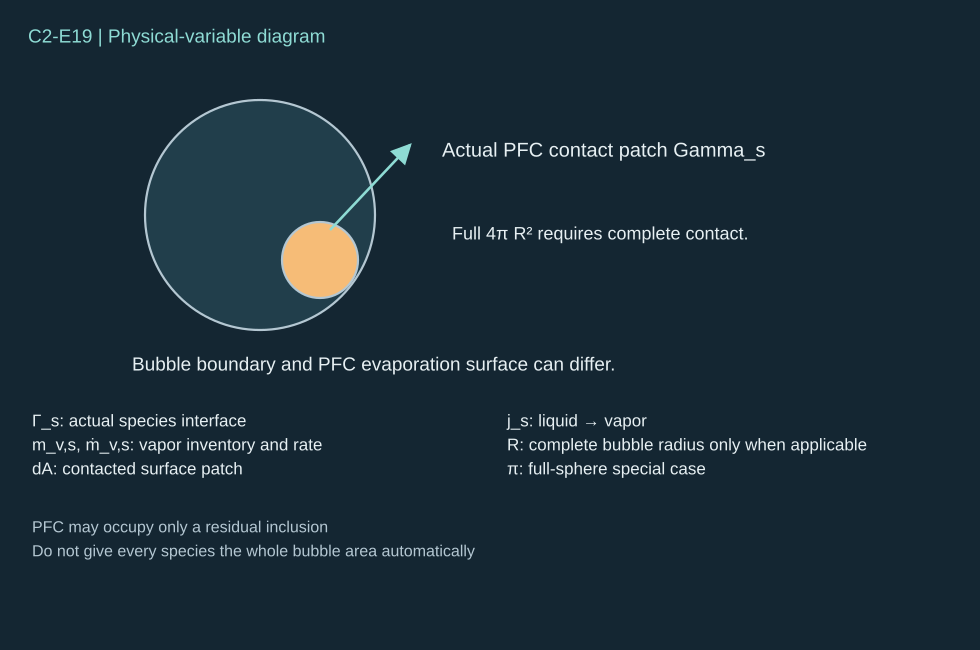
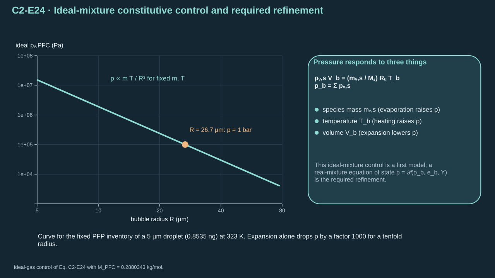

Laser heating, nucleation, heat and mass transfer, material properties, and finite phase inventory.
激光加热、成核、传热传质、物性与有限相存量。
What changes when PFC replaces an ordinary droplet?
用 PFC 替代普通液滴会改变什么？
Calculate absorption, heat delivery, activation and finite-inventory pressure. Define a matched aqueous control.
计算吸收、热输送、激活及有限物质量压力。定义匹配水相对照。
Awaiting answers待作答
Learning goals
学习目标
Calculate incident, intercepted, absorbed, and core-delivered energy without double counting.
计算入射、截获、吸收及送达核心能量，避免重复计入。
Explain why low bulk boiling temperature is insufficient for nanoscale laser activation.
解释为什么低体相沸点不足以保证纳米尺度激光激活。
Close phase mass and energy with finite inventory, correct normal signs, and a stated EOS.
以有限库存、正确法向符号及明确 EOS 闭合相质量与能量。
Distinguish an inventory-state radius from dynamical maximum radius and useful jet output.
区分库存状态半径、动力学最大半径与有用射流输出。
Prerequisite. Prerequisites: Chapter 1’s cavity motion, carrier inertia, work and asymmetry.
先修知识。 前提：第一章的空腔运动、载液惯性、功及非对称性。
2. Optical heating and finite PFC inventory
2. 光学加热与有限 PFC 物质量
Calculate the pressure history of one laser-heated PFC inclusion. Chapter 1 derived the response to prescribed internal pressure. This chapter supplies absorption, heating, activation, mass and energy balances. The emitted jet usually consists mainly of carrier liquid. Use PFC density for core inventory and carrier density for inertia. Lower activation threshold leaves emitted momentum and transfer repeatability unresolved.
System and conventions. Place an initially liquid spherical PFC core in aqueous carrier. Initial temperature is T0 (K); carrier pressure is pc (Pa). Beam depth z (m) increases along propagation. Transverse radius r (m) measures distance from its axis. Time t=0 (s) precedes the pulse. Prescribe entering intensity and initial temperature field. Symmetry gives zero center heat flux. Specify an outer reservoir or resolve the surrounding carrier. Enforce contact flux continuity and the chosen contact law. Thermodynamic pressures are absolute. Unit normal n points from liquid into vapor. Positive flux denotes evaporation. Inside a bubble, this normal opposes outward radial unit vector er.
Approximation sequence. The optical model neglects scattering and nonlinear absorption. Pre-phase heating omits pressure work and viscous heat in nearly incompressible phases. Nucleation assumes local isothermality and a nucleus much smaller than the liquid core. Uniform-bubble closure assumes common temperature and a dilute ideal mixture. Each approximation has its own validity range. The micron-sized teaching core does not represent a nanodroplet.
Pulse energy incident per unit area; it is a time integral, not an instantaneous irradiance.
单位面积接收的脉冲能量；是时间积分，而非瞬时辐照度。
I
Laser irradiance
激光辐照度
W m⁻²
Instantaneous optical power per unit area; integrating it over the pulse gives fluence.
单位面积上的瞬时光功率；对脉冲历时积分得到能量面密度。
EL
Incident laser-pulse energy
入射激光脉冲能量
J
Total incident optical budget before interception, reflection and absorption losses.
截获、反射及吸收损失之前的总入射光能预算。
Eabs
Absorbed optical energy
吸收光能
J
Energy actually deposited in the defined absorber; not necessarily heat delivered to PFC.
实际沉积在指定吸收体中的能量；不一定等于传给 PFC 的热量。
T
Thermodynamic temperature
热力学温度
K
Local state in the heat/phase balance; phase equilibrium and rate laws require its history.
热／相平衡中的局部状态；相平衡与速率规律需要其时间历程。
ρ
Local material mass density
局部材料质量密度
kg m⁻³
The material or phase must be specified; PFC heating density and carrier inertia density differ.
必须指定材料或相；PFC 加热密度与载液惯性密度不同。
cp
Specific heat capacity at constant pressure
定压比热容
J kg⁻¹ K⁻¹
Sensible-heat capacity per mass; constant-property examples are declared approximations.
单位质量的显热容量；恒物性例题是明确声明的近似。
k
Thermal conductivity
导热系数
W m⁻¹ K⁻¹
Relates temperature gradient to conductive heat flux, not to fluid permeability.
关联温度梯度与导热热流，不是流体渗透率。
α
Thermal diffusivity
热扩散率
m² s⁻¹
Conductivity divided by volumetric heat capacity; determines thermal communication time.
导热系数除以体积热容量；决定热传播时间。
a0
Initial liquid-PFC core radius
初始液态 PFC 核半径
m
Defines the initial finite liquid inventory; not the growing vapor-cavity radius.
确定初始有限液体存量；并非增长中的蒸气腔体半径。
R
Subsequent bubble radius
后续气泡半径
m
Geometric cavity coordinate after activation; by itself it does not determine phase mass.
激活后的几何空腔坐标；仅凭它无法确定各相质量。
Vb
Bubble volume
气泡体积
m³
Volume enclosing the vapor/gas mixture; requires mass, temperature and pressure closure.
蒸气／气体混合物所在体积；需要质量、温度与压力闭合。
ml
Remaining liquid-PFC mass
剩余液态 PFC 质量
kg
Liquid reservoir remaining after signed interfacial phase transfer.
带符号界面相变传递之后剩余的液体储量。
mv
PFC vapor mass
PFC 蒸气质量
kg
Vapor inventory, constrained by the original core and any stated transport sources.
蒸气存量，受原始液核及所声明传输源约束。
js
Signed species phase-transfer mass flux
带符号组分相变质量通量
kg m⁻² s⁻¹
Mass crossing unit interfacial area per time; the chosen evaporation direction fixes its sign.
单位界面面积每单位时间穿过的质量；所选蒸发方向确定其符号。
σpc
PFC–carrier interfacial tension
PFC—载液界面张力
N m⁻¹
Acts at the original liquid-droplet boundary; not the vapor–PFCnucleation tension.
作用于原始液滴边界；不是蒸气—PFC成核张力。
σvp
Vapor–liquid-PFCinterfacial tension
蒸气—液态 PFC界面张力
N m⁻¹
Belongs to the vapor nucleus inside PFC and its capillary/nucleation cost.
属于 PFC 内部蒸气核及其毛细／成核代价。
Ub
Bubble internal energy
气泡内能
J
Thermodynamic energy of the cavity contents; changes by heat, phase enthalpy and boundary work.
腔内物质的热力学能量；由热、相变焓与边界功改变。
hs
Transported species specific enthalpy
输运组分比焓
J kg⁻¹
Enthalpy carried with unit transferred species mass; phase and state must be specified.
单位传递组分质量携带的焓；必须指定相与状态。
Ms
Species molar mass
组分摩尔质量
kg mol⁻¹
Converts species mass to amount of substance in the chosen equation of state.
在所选状态方程中，将组分质量换算为物质的量。
Lv,s
Species-specific latent heat of vaporization
组分汽化比潜热
J kg⁻¹
Phase-change energy per converted species mass; the interface state and approximation are specified.
单位转化组分质量的相变能量；需指定界面状态与近似。
Ru
Universal molar gas constant
通用摩尔气体常数
J mol⁻¹ K⁻¹
Used with amount of substance, not silently with mass-specific variables.
与物质的量共同使用，不能默默代入质量比形式。
Match a PFC-free aqueous control to the PFC case. Keep outer geometry, absorber location, absorbed energy and initial state comparable. Also match outlet and target load path. Simultaneous absorber or spot-size changes confound the material comparison. Measure activation, emitted mass and speed, useful impulse, intact yield and reset. Retained vapor can ease activation while cushioning later collapse.
F(r) is incident fluence at radial coordinate r≥0 (J m⁻²)
F(r) 为径向坐标 r≥0 处的入射能量密度（J m⁻²）
F0>0 is on-axis fluence (J m⁻²)
F0>0 为轴上能量密度（J m⁻²）
w>0 is the transverse e−2 beam radius (m)
w>0 为横向 e−2 光束半径（m）
r — Transverse distance from the laser-beam axis (m)
r — 到激光光束轴线的横向距离（m）
Conventions and conditions.exp is the natural exponential.
约定与条件。exp 为自然指数函数。
(C2-E01) · Prescribed optical profile
给定的光学分布
F(r)=F0exp(−2r2/w2)

Fluence varies across the beam; the quoted radius fixes its definition.
能量密度沿光束横向变化；所给半径明确其定义。
Step 2 — Integrate the beam plane. The annular area is 2πrdr. Substitute x=2r2/w2, giving dx=4rdr/w2. Limits remain zero and infinity. The integral converges. The exponential decays to zero at infinity.
The Gaussian energy follows from summing annular contributions.
高斯光束能量来自环带贡献之和。
Step 3 — Calculate intercepted energy. End the same integral at centered aperture radius ba (m). Divide by total beam energy. Off-axis or irregular absorbers require their actual area integral.
The aperture removes the outer annuli from the useful incident energy.
窗口使外侧环带不再计入有用入射能量。
Step 4 — Include pulse duration. Normalize the temporal pulse shape to unit integral. A rectangular pulse has height equal to reciprocal duration. Shorter duration raises irradiance at fixed fluence. Incident energy stays fixed.
A pulse waveform specifies when the energy is deposited.
脉冲波形规定能量何时沉积。
Step 5 — Solve absorption transport. Irradiance loss across a slab equals deposited heat per volume × thickness. Assume constant positive absorption coefficient. Separate and integrate from entry face to depth, then exponentiate. Optical transit is instantaneous relative to thermal evolution.
μa>0 is constant absorption coefficient (m⁻¹), with a labeling absorption
μa>0 为常数吸收系数（m⁻¹），a 表示吸收
Qabs is volumetric optical heat deposition (W m⁻³)
Qabs 为光学体积生热率（W m⁻³）
I′ — Dummy irradiance integration variable (W m⁻²)
I′ — 辐照度积分哑变量（W m⁻²）
z′ — Dummy depth integration coordinate (m)
z′ — 深度积分哑坐标（m）
I — Laser irradiance (W m⁻²)
I — 激光辐照度（W m⁻²）
Conventions and conditions.∂z denotes differentiation in depth; z; ∫ denotes integration; ex denotes the exponential; Zero input gives identically zero deposition without dividing by irradiance.
The absorber deposits heat over a finite optical depth.
吸收体在有限光学深度内沉积热量。
Step 6 — Integrate deposited heat. Integrate the volume source over depth to obtain absorbed power/area. Integrate pulse time and intercepted area to obtain energy. Apply the entering fraction from front-face reflection once. The defined effective absorptance already contains that reflection.
Interception, reflection, and internal absorption each act once.
截获、反射与内部吸收各作用一次。
Absorptance approaches zero at zero optical thickness. At large thickness, it approaches the entering fraction. Qabs has units W m⁻³; its volume–time integral has units J. Scattering, multiple reflection, saturation and plasma formation require other models. A boundary source can replace an equivalent resolved layer. Including both duplicates the deposited energy.
光学厚度趋零时，吸收率趋零。厚度很大时，吸收率趋于进入比例。Qabs 单位为 W m⁻³，其体积—时间积分为 J。散射、多次反射、饱和及等离子体形成需其他模型。等效边界热源可替代解析层，同时加入两者会重复计入能量。
Strohm et al. optically activated PbS-loaded PFP at 1064 nm. Wei et al. used gold-containing PFH nanoemulsion. These studies establish formulation-specific optical activation routes. Universal threshold, jet speed and transfer yield remain unestablished. Absorber placement and formulation require experimental inputs. [R6][R7]
Step 7 — Conserve thermal energy. Before phase change, conduction and absorption change sensible enthalpy. Assume constant properties in nearly incompressible phases. Omit viscous heating and pressure work. Use near-constant-pressure heat capacity. Moving liquid advects heat; a solid absorber has zero velocity. Conductive flux points down the temperature gradient. Its negative divergence supplies heat influx.
cp>0 is constant specific heat capacity (J kg⁻¹ K⁻¹)
cp>0 为常数比热容（J kg⁻¹ K⁻¹）
t is time (s)
t 为时间（s）
u is material velocity (m s⁻¹)
u 为物质速度（m s⁻¹）
Qabs is optical heating (W m⁻³)
Qabs 为光生热率（W m⁻³）
Conventions and conditions.D/Dt is the material derivative; ∂t is the fixed-position time derivative; ∇ and ∇⋅ are spatial gradient and divergence (m⁻¹); the centered dot here is a vector contraction, not punctuation.
Heating the absorber and heating the PFC are separate parts of the thermal path.
加热吸收体与加热 PFC 是热路径中的不同环节。
Step 8 — Close thermal contacts. Orient the normal from material A into B. Positive normal heat flux travels from A to B. Without surface heat storage, flux is continuous. Nonnegative contact resistance permits a temperature jump. Zero resistance gives temperature continuity. This contact differs from the phase-change interface below.
步骤 8——闭合热接触。 法向从材料 A 指向 B，正法向热通量由 A 流向 B。无界面热储存时，通量连续。非负接触热阻允许温度跳跃，零热阻给出温度连续。该接触不同于下文相变界面。
Symbols before Eq. (C2-E08).
式（C2-E08）前的符号定义。
First individual definition第一项单独定义
Second individual definition第二项单独定义
qn is signed normal heat flux (W m⁻²)
qn 为带符号法向热通量（W m⁻²）
qA — Conductive heat flux in material A (W m⁻²)
qA — 材料 A 中的传导热通量（W m⁻²）
qB — Conductive heat flux in material B (W m⁻²)
qB — 材料 B 中的传导热通量（W m⁻²）
nAB is unit normal from A into B (dimensionless)
nAB 为从 A 指向 B 的单位法向（无量纲）
TA — Temperature on contact side A (K)
TA — 接触面 A 侧温度（K）
TB — Temperature on contact side B (K)
TB — 接触面 B 侧温度（K）
RT≥0 is area-specific thermal contact resistance (m² K W⁻¹)
RT≥0 为单位面积热接触阻力（m² K W⁻¹）
Conventions and conditions.⋅ denotes a vector dot product.
约定与条件。⋅ 表示向量点积。
(C2-E08) · Thermal-contact boundary conditions
热接触边界条件
qn=qA⋅nAB=qB⋅nAB,TA−TB=RTqn

Contact resistance delays heat transfer even after the light has been absorbed.
即使光已被吸收，接触热阻仍会延迟热传递。
Step 9 — Derive diffusion scales. Divide the motionless heat equation by volumetric heat capacity. Estimate its time derivative and spatial second derivative over the heating distance. Balance them to obtain diffusion time and penetration length. These are scales rather than sharp thermal fronts. Heating duration may include conduction after the optical pulse.
cp — Specific heat capacity at constant pressure (J kg⁻¹ K⁻¹)
cp — 定压比热容（J kg⁻¹ K⁻¹）
ΔT=0 is characteristic temperature change (K)
ΔT=0 为特征温度变化（K）
Lh>0 is heating distance (m)
Lh>0 为加热距离（m）
tth is diffusion time estimate (s)
tth 为扩散时间估计（s）
τh>0 is available heating duration (s)
τh>0 为可用加热时长（s）
δT is penetration estimate (m)
δT 为渗透深度估计（m）
Conventions and conditions.∼ means order-of-magnitude scaling, not equality.
约定与条件。∼ 表示量级尺度关系，不表示严格相等。
(C2-E09) · Diffusive scaling derived from the heat equation
由热传导方程推导的扩散尺度关系
α=ρcpk,tthΔT∼αLh2ΔT,tth∼αLh2,δT∼ατh

Compare heat penetration with the distance to the PFC, not only with beam width.
应比较热渗透尺度与到达 PFC 的距离，而不只是光束宽度。
Thermal example. Prescribe density 1630 kg m⁻³, heat capacity 654 J kg⁻¹ K⁻¹, and conductivity 0.050 W m⁻¹ K⁻¹. The rounded near-293 K heat capacity uses the cited NIST datum. Density and conductivity are teaching inputs. Heating distance is 5 μm; duration is 10 ns.
热学示例。 规定密度 1630 kg m⁻³、热容 654 J kg⁻¹ K⁻¹、导热率 0.050 W m⁻¹ K⁻¹。近 293 K 的舍入热容采用所引 NIST 数据。密度与导热率为教学输入。加热距离为 5 μm，时长为 10 ns。
Symbols before Eq. (C2-E10).
式（C2-E10）前的符号定义。
First individual definition第一项单独定义
Second individual definition第二项单独定义
αd is declared PFC-liquid diffusivity (m² s⁻¹), with d labeling droplet liquid
αd 为所声明 PFC 液体的热扩散率（m² s⁻¹），d 表示液滴液体
tth is diffusion-time estimate (s)
tth 为扩散时间估计（s）
δT is penetration estimate (m)
δT 为渗透深度估计（m）
Conventions and conditions. The numerator 0.050 is conductivity in W m⁻¹ K⁻¹; 1630 is density in kg m⁻³; 654 is specific heat in J kg⁻¹ K⁻¹; 5×10−6 is distance in m; 10−8 is duration in s; Powers are numerical exponents, and ∼ denotes a scale estimate.
约定与条件。 分子 0.050 为导热系数，单位 W m⁻¹ K⁻¹；1630 为密度，单位 kg m⁻³；654 为比热容，单位 J kg⁻¹ K⁻¹；5×10−6 为距离，单位 m；10−8 为时长，单位 s；幂为数值指数，∼ 表示尺度估计。
A short pulse does not imply uniform temperature in a micron-scale core.
短脉冲不意味着微米级核心内温度均匀。
Penetration is 0.00433 of the heating distance. Uniform core temperature requires distributed heating or additional diffusion time. At 100 nm, the diffusion estimate falls to 0.213 μs. That still exceeds 10 ns. Hotspots, aggregation and shell contact can dominate local heating. Optical breakdown requires its own optical conditions and observations.
Step 10 — Set initial core pressure. A spherical PFC–carrier interface creates capillary pressure. Add shell-supported overpressure when present. This static reference omits acceleration and shell-rate effects. Those require a dynamic constitutive law.
σpc≥0 is PFC–carrier interfacial tension (N m⁻¹), with pc naming those phases
σpc≥0 为 PFC–载液界面张力（N m⁻¹），pc 表示这两个相
Πshell is shell-supported excess pressure (Pa)
Πshell 为壳层支撑超压（Pa）
Conventions and conditions.≃ is the static spherical approximation; The numerical interfacial tension 0.020 is a teaching input in N m⁻¹, the radii are in m, and 1 kPa = 1000 Pa.
The smaller inclusion has a larger capillary contribution at the same tension.
界面张力相同时，较小夹杂的毛细压力贡献更大。
Specify the compound for every quoted boiling point. NIST entries below describe neat compounds. Tabulated boiling ranges represent different datasets, not formulation uncertainty. Divide molar heat capacity or enthalpy by molar mass for mass-specific values. [R8][R9][R15]
Retain temperature and dataset; do not transfer this value to every PFC.
保留温度及数据集；不能将此值套用到所有 PFC。
Water: H₂O; molar mass 0.0180153 kg mol⁻¹
水：H₂O；摩尔质量 0.0180153 kg mol⁻¹
Normal-boiling compilation approximately 373.17 K.
正常沸点汇编约为 373.17 K。
PFC-free thermal comparison at matched temperature and pressure.
在相同温度与压力下的不含 PFC 热学参照。
Step 11 — Evaluate equilibrium vapor pressure. Use the NIST Barber–Cady Antoine fit within its temperature range. Pressure divided by one bar makes the logarithm dimensionless. The coefficients are empirical inputs. [R8]
步骤 11——计算平衡蒸气压。 在温度适用范围内采用 NIST Barber–Cady Antoine 拟合。压力除以一 bar，使对数自变量无量纲。系数为经验输入。 [R8]
Symbols before Eq. (C2-E12).
式（C2-E12）前的符号定义。
First individual definition第一项单独定义
Second individual definition第二项单独定义
psat,PFP(T) is bulk equilibrium PFP vapor pressure (Pa), sat labeling saturation
psat,PFP(T) 为体相平衡 PFP 蒸汽压（Pa），sat 表示饱和
T is absolute temperature in the stated range (K)
T 为所给范围内的绝对温度（K）
Conventions and conditions.log10 is the base-ten logarithm; One bar equals 105 Pa; Empirical coefficient 4.2063 is dimensionless; 1103.454 K and 39.77 K have temperature units; The denominator is positive throughout the stated domain.
约定与条件。log10 为常用对数；一巴等于 105 Pa；经验系数 4.2063 无量纲；1103.454 K 和 39.77 K 具有温度单位；所给范围内分母为正。
The saturation curve concerns an equilibrium state, not automatic activation.
饱和曲线描述平衡状态，而不是自动激活。
Eq. (C2-E12) gives PFP pressures of 70.60 kPa at 293 K, 103.35 kPa at 303 K, and 204.33 kPa at 323 K. Use water coefficients within their stated interval. They give 2.315 kPa at 293 K and 12.248 kPa at 323 K. These are calculated reference values. [R15]
式（C2-E12）给出 PFP 蒸气压：293 K 时 70.60 kPa，303 K 时 103.35 kPa，323 K 时 204.33 kPa。水系数须在注明温区内使用。所得值为 293 K 时 2.315 kPa、323 K 时 12.248 kPa。这些是计算参照值。 [R15]
Symbols before Eq. (C2-E13).
式（C2-E13）前的符号定义。
First individual definition第一项单独定义
Second individual definition第二项单独定义
psat,w is bulk equilibrium water vapor pressure (Pa), w labeling water
psat,w 为体相平衡水蒸汽压（Pa），w 表示水
T is temperature (K), restricted to either listed interval
T 为温度（K），限定在两个所列区间之一
T/K is the numerical temperature in kelvin (dimensionless)
T/K 为以开尔文计的温度数值（无量纲）
Conventions and conditions.log10 is the base-ten logarithm of pressure relative to one bar (105 Pa); The leading coefficients are dimensionless; all coefficients multiplied by K have temperature units; No value is assigned to the 303–304 K gap by these two branches.
约定与条件。log10 为相对于一巴（105 Pa）的压力比值的常用对数；首项系数无量纲；乘以 K 的系数具有温度单位；这两个分支未给出 303–304 K 间隙的值。
(C2-E13) · Verified empirical water property correlations
Water provides a matched-temperature reference, not a guaranteed vapor reservoir.
水提供同温参照，却不是有保证的蒸汽库。
At 323 K and 100 kPa carrier pressure, the 5 μm core has 108 kPa liquid pressure. This is below the 204.33 kPa PFP equilibrium reference. The 100 nm core has 500 kPa liquid pressure, above that reference. Bulk driving is positive for the larger core and nonpositive for the smaller core. This control assumes constant tension and zero shell stress. Measured onset temperatures remain unestablished.
Step 12 — Construct nucleus free energy. Place a vapor nucleus inside liquid PFC. Assume local isothermality and a bulk liquid reservoir. New interface costs tension × area. Favorable vapor gains driving pressure × volume. Use vapor–PFC tension for this internal interface. Eq. (C2-E11) uses PFC–carrier tension at the outer interface.
The barrier belongs to creating a new internal vapor interface.
势垒来自生成新的内部蒸汽界面。
Step 13 — Find the critical branch. Differentiate both radius powers. For positive driving, divide the nonzero-radius bracket by positive driving pressure. The second derivative is negative at the critical radius. It is a barrier maximum. For nonpositive driving, the derivative stays positive at positive radius. No positive critical-radius branch exists in that case.
r∗ is the positive critical radius (m), with star labeling the stationary point and requiring Δpn>0
r∗ 为正临界半径（m），星号标记驻点，且要求 Δpn>0
π is the circular constant (dimensionless)
π 为圆周率（无量纲）
Conventions and conditions.d/drn is radius differentiation, ∣r∗ denotes evaluation there; The first derivative has units J m⁻¹ and the second J m⁻².
The stationary point is a maximum, not a stable equilibrium nucleus.
该驻点是最大值，不是稳定平衡汽核。
Step 14 — Evaluate the barrier. Substitute the squared and cubed critical radius. Subtract the coefficients explicitly. Increasing driving pressure lowers the barrier. Finite positive driving and tension leave a positive barrier.
Positive superheat driving does not make the nucleation barrier vanish.
正的过热驱动力并不会使成核势垒消失。
The barrier unit is (N/m)3/Pa2=Nm=J. Tension/pressure gives critical-radius units m. A nucleus comparable to core size violates the reservoir approximation. Surfaces, defects, dissolved gas and wetting can favor heterogeneous nucleation. An imposed seed defines post-nucleation dynamics. Onset prediction then remains unestablished.
Step 15 — Derive activation probability. Assume independent Poisson events. In a short interval, survival loses event expectation × current survival. Integrate the logarithmic derivative from initial survival one. Spatially and temporally varying rates fit this model. The rate itself requires a separate law. Use measured activation behavior when homogeneous nucleation is unsuitable.
J(T,p)≥0 is prescribed nucleation rate (m⁻³ s⁻¹) at local temperature T (K) and pressure p (Pa)
J(T,p)≥0 为给定的成核速率（m⁻³ s⁻¹），取决于局部温度 T（K）与压力 p（Pa）
Vd(t) denotes the remaining liquid-core region and its volume (m³), d labeling droplet
Vd(t) 表示剩余液核区域及其体积（m³），d 表示液滴
Λ(t) is total event rate (s⁻¹)
Λ(t) 为总事件速率（s⁻¹）
S(t) is no-event survival probability (dimensionless)
S(t) 为未发生事件的概率（无量纲）
Pactactivation probability (dimensionless)
Pact 为激活概率（无量纲）
t≥0 — Time (s)
t≥0 — 时间（s）
dV is volume element (m³)
dV 为体积元（m³）
T — Thermodynamic temperature (K)
T — 热力学温度（K）
p — Local or prescribed thermodynamic pressure as specified (Pa)
p — 按情景指定的局部或给定热力学压力（Pa）
Conventions and conditions.d/dt, ∫, ln, and ex denote differentiation, integration, natural logarithm, and exponential; The derivation assumes finite integrated nonnegative rate and independent Poisson events.
Activation probability requires the rate and the time spent in the activating state.
激活概率需要速率及处于可激活状态的时长。
2.4 Phase mass and energy balances
2.4 相质量与能量平衡
Step 16 — Conserve PFC inventory. Initial mass equals liquid density × core volume. Without external supply, liquid, vapor, dissolved and escaped PFC sum to that mass. Escaped mass is cumulative. It differs from vapor retained inside the bubble. Water supplies no additional PFC.
The compound ledger survives expansion, condensation, dissolution, and venting.
化合物账目在膨胀、凝结、溶解及排气过程中均成立。
Step 17 — Identify the phase-change surface. Integrate species flux over its contacted interface. Full spherical area requires full species contact and uniform flux. Residual PFC in water can have a smaller vaporization surface.
mv,s is vapor mass of species s (kg), where s labels a specified species such as PFC or water
mv,s 为组分 s 的蒸汽质量（kg）
js is signed liquid-to-vapor mass flux (kg m⁻² s⁻¹)
js 为带符号液到汽质量通量（kg m⁻² s⁻¹）
Γs is the species-contacting interface (—)
Γs 为该组分接触的界面（—）
dA is its area element (m²)
dA 为面积元（m²）
R>0 is spherical interface radius (m) only in the special second formula
R>0 仅在第二个特殊式中表示球形界面半径（m）
π is the circular constant (dimensionless)
π 为圆周率（无量纲）
s — Species index (dimensionless)
s — 组分指标（无量纲）
Conventions and conditions. a dot is a time derivative (kg s⁻¹); the phase label isolates the phase-change contribution, excluding escape and dissolution; ∫ is surface integration.
m˙v,s∣phase=∫ΓsjsdA,m˙v,s∣phase=4πR2jsonly for uniform complete spherical contact

A bubble surface and a PFC evaporation surface need not be identical.
气泡表面与 PFC 蒸发表面未必相同。
Step 18 — Derive velocity slip. A single-component phase boundary has equal mass flux on both sides. Inside a bubble, the liquid-to-vapor normal points inward. Project liquid velocity minus interface velocity onto that normal. The result is wall speed minus radial liquid speed. Solve for liquid speed. Equating potential-flow speed to wall speed then assumes small slip.
The interface need not move at the same speed as the adjacent liquid.
界面不必以邻接液体的速度运动。
Require ∣js∣/ρl below a relevant liquid or interface speed scale. At a turning point, use finite event speed instead of zero wall speed. Strong evaporation can add recoil stress. Check it before reusing Chapter 1’s simple wall stress. Mixtures require species diffusion, composition conditions and common mass balance.
Step 19 — Derive the Stefan sign. Omit surface heat storage and kinetic/mechanical jump corrections. Liquid-side conductive influx minus vapor-side outflux supplies phase-change enthalpy. Evaluate both enthalpies at matching temperature and reference conventions. Reversing heat supply gives negative flux. Condensation then releases latent enthalpy.
步骤 19——推导 Stefan 符号。 忽略界面热储存及动能、力学跳跃修正。液侧传导流入减汽侧流出，供给相变焓。两侧焓采用一致温度与参考约定。反转供热会产生负通量，凝结释放潜焓。
Symbols before Eq. (C2-E21).
式（C2-E21）前的符号定义。
First individual definition第一项单独定义
Second individual definition第二项单独定义
Lv,s>0 is latent enthalpy per species mass (J kg⁻¹)
Lv,s>0 为单位组分质量的潜焓（J kg⁻¹）
hv,s — Specific vapor enthalpy of species s at the actual boundary state (J kg⁻¹)
hv,s — 实际边界状态下组分 s 的蒸气比焓（J kg⁻¹）
hl,s — Specific liquid enthalpy of species s at the interface (J kg⁻¹)
hl,s — 界面处组分 s 的液体比焓（J kg⁻¹）
js is signed evaporation flux (kg m⁻² s⁻¹)
js 为带符号蒸发通量（kg m⁻² s⁻¹）
ql — Liquid-side conductive heat flux (W m⁻²)
ql — 液体侧传导热通量（W m⁻²）
qv — Vapor-side conductive heat flux (W m⁻²)
qv — 蒸气侧传导热通量（W m⁻²）
n points liquid→vapor (dimensionless)
n 从液指向汽（无量纲）
η∈{l,v} labels phase (dimensionless)
η∈{l,v} 表示相（无量纲）
kη — Thermal conductivity of the selected phase (W m⁻¹ K⁻¹)
kη — 所选相的导热系数（W m⁻¹ K⁻¹）
Tη — Temperature of the selected phase (K)
Tη — 所选相的温度（K）
Conventions and conditions.∇ is spatial gradient (m⁻¹); ⋅ is a vector dot product; All terms in the heat jump have units W m⁻².
约定与条件。∇ 为空间梯度（m⁻¹）；⋅ 为向量点积；热跳跃式各项单位均为 W m⁻²。
(C2-E21) · Reduced interfacial energy jump and Fourier law
The liquid-to-vapor normal fixes the signs of heat and phase flux.
液到汽法向确定热通量及相变通量符号。
For a sign control, prescribe normal heat supply 0.95 MW m⁻², zero vapor-side loss, and latent enthalpy 95 kJ kg⁻¹. Stefan flux is 10 kg m⁻² s⁻¹. With adjacent density 1000 kg m⁻³, slip is 0.010 m s⁻¹. With PFC density 1630 kg m⁻³, slip is 0.006135 m s⁻¹. Density belongs to the actual evaporating phase. Reversing heat reverses flux and slip. This checks units and sign. Actual nanoemulsion interface state remains unestablished.
符号对照给定法向供热 0.95 MW m⁻²、汽侧损失为零、潜焓 95 kJ kg⁻¹。Stefan 通量为 10 kg m⁻² s⁻¹。邻接密度取 1000 kg m⁻³ 时，滑移为 0.010 m s⁻¹。PFC 密度取 1630 kg m⁻³ 时，滑移为 0.006135 m s⁻¹。密度应属于实际蒸发相。反转供热会反转通量与滑移。这检验单位与符号。实际纳米乳液界面状态尚未确立。
Step 20 — Apply the bubble first law. Use a uniform-state open vapor control volume. Incoming mass carries enthalpy, including entry flow work. Expansion performs work on the surroundings. Count conductive heat separately. Omit resolved internal kinetic energy and surface storage. Outgoing mass carries its own boundary enthalpy. Each flux requires a consistent boundary state.
Mass enthalpy and conductive heat are different terms in the bubble ledger.
质量焓与传导热是气泡账目中的不同项。
Step 21 — Expand the temperature derivative. Assume common temperature and ideal species energies dependent on temperature. Differentiate each mass × specific-energy product. Constant-volume specific heat is the specific-energy derivative. Subtract bulk internal energy from boundary enthalpy. This gives pressure flow work when both states match. Different entry temperature adds a sensible internal-energy difference. The expansion retains changing vapor mass explicitly.
es(Tb) is specific internal energy using a consistent reference (J kg⁻¹)
es(Tb) 为采用一致参考的比内能（J kg⁻¹）
Tb is common bubble temperature (K)
Tb 为共同气泡温度（K）
cv,s=des/dTb is constant-volume specific heat (J kg⁻¹ K⁻¹)
cv,s=des/dTb 为定容比热（J kg⁻¹ K⁻¹）
hv,s is actual boundary specific enthalpy (J kg⁻¹)
hv,s 为实际边界比焓（J kg⁻¹）
Q˙b is conductive heat input (W)
Q˙b 为传导热输入（W）
pb — Uniform total absolute bubble pressure (Pa)
pb — 均匀总绝对气泡压力（Pa）
Vb — Bubble volume (m³)
Vb — 气泡体积（m³）
s=1,…,Ns — Species index, from 1 through the declared species count (dimensionless)
s=1,…,Ns — 从 1 到所声明组分数的组分指标（无量纲）
Ns — Number of declared species (dimensionless)
Ns — 声明的组分数（无量纲）
Conventions and conditions. a dot denotes a time derivative; d/dTb is temperature differentiation; Boundary temperature may differ from Tb and must then be used in hv,s.
A variable vapor mass makes a fixed-mass polytropic shortcut conditional.
蒸汽质量变化，使固定质量多方捷径只能有条件成立。
Use consistent enthalpy references in Stefan and bubble balances. Interface heat creates the specified incoming vapor enthalpy. Adding another latent source to Eq. (C2-E22) duplicates that conversion. Fixed-mass adiabatic expansion lowers bubble energy. Cooling and condensation can lower pressure. Slow mass exchange can retain vapor and cushion collapse. Dissolution, permanent gas and escape need separate balances.
Stefan 与气泡平衡采用一致焓参考。界面热产生指定的流入蒸气焓。再向式（C2-E22）加入潜热源会重复计入转化。固定质量绝热膨胀降低气泡能量。冷却与凝结可降低压力。质量交换慢时可保留蒸气并缓冲塌缩。溶解、非凝结气体及逸出需独立平衡。
Specify nonzero seed volume, species masses and temperature after nucleation. Also specify initial interface shape and velocity. All seeds must satisfy inventory and energy balances. Onset probability leaves these states unresolved. Before vapor appears, use liquid heating and activation equations. Zero vapor heat capacity excludes starting with the bubble temperature equation.
Step 22 — Close pressure with an EOS. In a dilute ideal mixture, each partial pressure follows species moles, common temperature and volume. Sum all species, including permanent gas. High-density compression requires a real-fluid or mixture EOS. Antoine saturation and a fixed polytropic exponent leave that state closure unresolved.
pv,s is ideal partial pressure of species s (Pa), v naming the vapor-domain component
pv,s 为组分 s 的理想分压（Pa），v 标记蒸汽域组分
Vb>0 is bubble volume (m³)
Vb>0 为气泡体积（m³）
mv,s≥0 is its mass (kg)
mv,s≥0 为其质量（kg）
Ms>0 is molar mass (kg mol⁻¹)
Ms>0 为摩尔质量（kg mol⁻¹）
Ru=8.314462618 J mol⁻¹ K⁻¹ is the universal gas constant
Ru=8.314462618 J mol⁻¹ K⁻¹ 为通用气体常数
Tb>0 is bulk temperature (K)
Tb>0 为体相温度（K）
pb is total pressure (Pa)
pb 为总压力（Pa）
s=1,…,Ns — Species index, from 1 through the declared species count (dimensionless)
s=1,…,Ns — 从 1 到所声明组分数的组分指标（无量纲）
P is a specified equation-of-state function (—)
P 为明确的状态方程函数（—）
ρb mixture density (kg m⁻³)
ρb 为混合物密度（kg m⁻³）
eb specific internal energy (J kg⁻¹)
eb 为比内能（J kg⁻¹）
Y the species mass-fraction vector (dimensionless, entries summing to one)
Y 为组分质量分数向量（无量纲，各分量之和为一）
Ns — Number of declared species (dimensionless)
Ns — 声明的组分数（无量纲）
Conventions and conditions.∑ is summation; EOS means equation of state.
约定与条件。∑ 为求和；EOS 指状态方程。
(C2-E24) · Ideal-mixture constitutive control and required refinement
理想混合物本构对照模型与所需改进
pv,sVb=Msmv,sRuTb,pb=s=1∑Nspv,s,pb=P(ρb,eb,Y)for a stated real-mixture EOS

The pressure responds to species masses, temperature, and changing volume.
压力响应组分质量、温度及体积变化。
Step 23 — Separate pressure-change terms. Require positive species mass, temperature, pressure and volume. Take the ideal-law logarithm and differentiate. The terms represent mass change, temperature change and compression. At zero species mass, use Eq. (C2-E24) directly.
mv,s>0 is its vapor-domain mass (kg), s labeling species
mv,s>0 为其蒸汽域质量（kg），s 表示组分
Tb>0 is bubble temperature (K)
Tb>0 为气泡温度（K）
Vb>0 is volume (m³)
Vb>0 为体积（m³）
R>0 is radius for a spherical bubble (m)
R>0 为球形气泡半径（m）
Conventions and conditions. a dot is a time derivative; Every ratio has units s⁻¹; the final equality uses Vb=4πR3/3 and is restricted to spherical geometry.
A radius-only gas law hides mass and thermal changes.
仅由半径决定的气体定律会隐藏质量与热变化。
Step 24 — Limit saturation by inventory. Prescribe temperature and free vapor volume in a closed nondissolving control. Saturated mass equals pressure × volume/(gas constant × temperature). If it exceeds supply, all PFCvaporizes and partial pressure falls below saturation. Assume rapid equilibrium, negligible curvature corrections and coexistence conditions. This algebra supplies an equilibrium control, not a rate law.
The saturation branch ends when the finite liquid inventory is exhausted.
有限液体库存耗尽时，饱和分支终止。
2.5 Single-core numerical example
2.5 单核心数值示例
Prescribe a 5 μm PFP-like liquid core at 293 K. Final vapor reference temperature is 323 K. Use density 1630 kg m⁻³, liquid heat capacity 654 J kg⁻¹ K⁻¹, and latent enthalpy 95 kJ kg⁻¹. Molar mass is the named PFP value. Size, density, constant coefficients and final state are teaching inputs. The latent value is not a 323 K NIST datum. Verified nanoformulation properties remain unestablished.
Step 26 — Estimate preparation enthalpy. Prescribe heating followed by vaporization near constant pressure. Use constant heat capacity and latent enthalpy. Sensible energy equals mass × heat capacity × temperature rise. Latent energy equals mass × latent enthalpy. This screen omits pressure-path detail, carrier heat, shell work, gradients and losses. Activation threshold and jet energy remain unestablished.
Most of this declared preparation estimate is latent enthalpy.
该制备估计中的大部分能量是潜焓。
Refine the enthalpy path. At near-constant pressure, heat subcooled liquid to saturation. Vaporize it, then heat vapor to the final temperature. Integrate each phase heat capacity over its own interval. The 97.82 nJ screen instead applies liquid heat capacity over 30 K plus fixed latent enthalpy. Exact endpoint enthalpy requires vapor heat capacity and the actual pressure path.
细化焓路径。 近恒压下先将过冷液体加热至饱和，再汽化，然后将蒸气加热至最终温度。分别在各温区积分对应相热容。97.82 nJ 筛选则在整个 30 K 温升使用液体热容，再加固定潜焓。精确终态焓需要蒸气热容及实际压力路径。
Symbols before Eq. (C2-E29).
式（C2-E29）前的符号定义。
First individual definition第一项单独定义
Second individual definition第二项单独定义
Qiso is heat needed for the stated constant-pressure preparation path (J), iso labeling isobaric
Qiso 为所述恒压制备路径的需热（J），iso 表示等压
mPFC,0 is conserved PFC mass (kg)
mPFC,0 为守恒 PFC 质量（kg）
p is prescribed constant pressure (Pa)
p 为给定常压力（Pa）
T0 — Initial liquid temperature (K)
T0 — 初始液体温度（K）
Tsat — Liquid–vapor coexistence temperature at the prescribed pressure (K)
Tsat — 给定压力下的液—汽共存温度（K）
T∗ — Selected final vapor temperature on the constant-pressure path (K)
T∗ — 恒压路径上选定的最终蒸气温度（K）
T is dummy integration temperature (K)
T 为积分哑温度（K）
cp,l — Temperature- and pressure-dependent liquid specific heat at constant pressure (J kg⁻¹ K⁻¹)
cp,l — 依赖温度与压力的液体定压比热（J kg⁻¹ K⁻¹）
cp,v — Temperature- and pressure-dependent vapor specific heat at constant pressure (J kg⁻¹ K⁻¹)
cp,v — 依赖温度与压力的蒸气定压比热（J kg⁻¹ K⁻¹）
Lv(Tsat,p) is latent enthalpy at coexistence (J kg⁻¹)
Lv(Tsat,p) 为共存状态潜焓（J kg⁻¹）
Conventions and conditions.∫ denotes temperature integration; No heat losses or other work are included; pressure work is already contained in this enthalpy path.
A rigorous preparation path uses the heat capacity of each phase over its own interval.
严谨制备路径在各相自身温区使用对应比热容。
Step 27 — Calculate an inventory radius. Fully vaporize the supply at 323 K and 100 kPa PFC partial pressure. Use the ideal-vapor control. Equate gas-law volume to initial volume × expansion factor. Cancel the positive sphere factor and take the positive cube root. The resulting radius belongs to the prescribed state. Dynamical maximum remains unestablished.
The expansion ratio follows from mass conservation at a stated pressure and temperature.
膨胀比来自指定压力与温度下的质量守恒。
At 323 K, 100 kPa lies below PFP saturation at 204.33 kPa. The control is fully vaporized and unsaturated. Substituting its computed radius into the ideal law recovers 100 kPa. At 30 μm, the entire inventory supplies 70.36 kPa PFC pressure. Sustained saturation there requires more PFC. Water vapor or gas adds pressure with separate mass and energy balances.
Step 28 — Compare absorbed and preparation energies. Prescribe incident energy 1 μJ and beam radius 20 μm. Use centered aperture radius 10 μm, thickness 5 μm, absorption coefficient2×105 m⁻¹, and reflection 0.10. Calculate interception and absorptance first. This hypothetical slab is independent of the cited activation experiments.
Aλ is effective absorptance at the chosen wavelength λ (m)
Aλ 为所选波长 λ（m）处的有效吸收率
Eabs is absorbed energy (J)
Eabs 为吸收能量（J）
Qprep is declared preparation-energy estimate (J)
Qprep 为声明的制备能量估计（J）
ηth,min is the minimum heat-delivery fraction in this loss-excluding estimate, th naming thermal and min minimum (dimensionless)
ηth,min 为该不含损失估计中的最低热输送比例，th 表示热学，min 表示最低（无量纲）
λ — Laser wavelength (m)
λ — 激光波长（m）
Conventions and conditions. both are dimensionless; The 10 and 20 are aperture and beam radii in the same μm unit; 0.10 is reflection fraction; 2×105 is absorption coefficient in m⁻¹; 5×10−6 is thickness in m; μJ and nJ mean 10−6 J; 10−9 J; ex is the exponential.
Use in Chapter 3. Twenty-five identical 5 μm cores contain 21.3367 ng PFC. Their preparation screens sum to 2.44561 μJ. These totals describe source mass and enthalpy. Available jet energy requires a separate conversion calculation. The optical slab above does not calibrate those cells. Chapter 3 states cell separation and conversion assumptions before calculating output.
第三章的应用。 二十五个相同 5 μm 核心含 21.3367 ng PFC，制备筛选值合计 2.44561 μJ。这些总量描述源质量和焓。可用射流能量需另算转换。上文光学薄层没有标定这些单元。第三章先规定单元分隔及转换假设，再计算输出。
Missing formulation inputs. Specify compound, purity, size distribution, shell and interface laws. Measure absorber spectrum, loading, location and thermal contact. Supply carrier transport, activation statistics, phase kinetics, permanent gas and high-state EOS. Project threshold, pressure maximum and jet velocity: Not established. Chapter 3 uses specified site histories for array calculations.
Original optical and thermal formulas used in the reference answer.
参考答案使用的原始光学与热学公式。
Locate the absorber first. A smaller spot raises fluence at fixed energy. A shorter pulse raises irradiance at fixed fluence. Heat reaching PFC depends on interception, spectrum, thickness, reflection and absorber position. Compare core distance with thermal penetration and include contact resistance. The 5 μm, 10 ns control penetrates about 22 nm. Surface heating leaves uniform core temperature unestablished. Distributed absorbers require their actual deposition geometry.
The example absorbs 223.85 nJ against a 97.82 nJ preparation screen. Delivery must exceed 43.7% before additional losses. Passing this screen leaves onset unresolved. Activation, phase inventory, pressure work and jet direction require separate calculations. Match optical and geometric inputs in the PFC-free control.
Vd(t′) is remaining PFC-liquid region, d labeling droplet (m³)
Vd(t′) 为剩余 PFC 液体区域，d 表示液滴（m³）
t≥0 — Time (s)
t≥0 — 时间（s）
dV is volume element (m³)
dV 为体积元（m³）
T — Thermodynamic temperature (K)
T — 热力学温度（K）
p — Local or prescribed thermodynamic pressure as specified (Pa)
p — 按情景指定的局部或给定热力学压力（Pa）
Conventions and conditions.∫ is integration; exp is the natural exponential; Independent events and finite integrated rate are assumed.
约定与条件。∫ 为积分；exp 为自然指数函数；假设事件独立且积分速率有限。
(C2-E34) · Original activation-probability formula
原始激活概率公式
Pact=1−exp[−∫0t∫Vd(t′)J(T,p)dVdt′]
The probability formula does not replace the missing material-specific rate.
概率公式不能替代缺失的材料特定速率。
Bulk boiling describes coexistence at specified pressure. Core pressure also includes inverse-radius capillarity and shell stress. At 323 K, the 5 μm control has positive PFP driving at 108 kPa. The 100 nm control has nonpositive driving at 500 kPa. Positive driving still leaves a nucleation barrier. Internal vapor–PFC tension sets that barrier. Rate and hot-state duration determine activation probability. Heterogeneous systems may need measured activation laws.
One failed exposure can reflect insufficient heat, confinement, low probability or unsuitable nucleation sites. A seeded simulation predicts evolution from its prescribed seed. Optical onset remains unestablished. Measure absorbed energy, onset statistics, shell/core state and bubble evolution under matched exposure.
Original finite-inventory formulas used in the reference answer.
参考答案使用的原始有限库存公式。
Symbols before Eq. (C2-E36).
式（C2-E36）前的符号定义。
First individual definition第一项单独定义
Second individual definition第二项单独定义
js is signed phase flux (kg m⁻² s⁻¹)
js 为带符号相变通量（kg m⁻² s⁻¹）
Lv,s is latent enthalpy (J kg⁻¹)
Lv,s 为潜焓（J kg⁻¹）
ql — Liquid-side conductive heat flux (W m⁻²)
ql — 液体侧传导热通量（W m⁻²）
qv — Vapor-side conductive heat flux (W m⁻²)
qv — 蒸气侧传导热通量（W m⁻²）
n is unit liquid→vapor normal (dimensionless)
n 为液→汽单位法向（无量纲）
Ub is bubble internal energy (J)
Ub 为气泡内能（J）
Q˙b is conductive heat input excluding mass enthalpy (W)
Q˙b 为不含质量焓的传导热输入（W）
pb is pressure (Pa)
pb 为压力（Pa）
Vb is volume (m³)
Vb 为体积（m³）
hv,s is boundary specific vapor enthalpy (J kg⁻¹)
hv,s 为边界蒸汽比焓（J kg⁻¹）
mv,s is species mass (kg)
mv,s 为组分质量（kg）
R is spherical bubble radius (m)
R 为球形气泡半径（m）
R˙ its wall speed (m s⁻¹)
R˙ 为壁速（m s⁻¹）
ul(R) adjacent radial liquid speed (m s⁻¹)
ul(R) 为邻接径向液速（m s⁻¹）
ρl liquid density (kg m⁻³)
ρl 为液体密度（kg m⁻³）
Conventions and conditions.∑s sums all declared species; A dot is a time derivative and ⋅ is a vector dot product; Interface heat and slip formulas assume the stated single-component reduced jump.
Original conservation formulas prevent unlimited vapor and duplicated latent energy.
原始守恒公式防止无限蒸汽及重复潜热计入。
Conserve measured or declared PFC across liquid, vapor, dissolved and escaped compartments. Ideal PFC pressure follows vapor mass, temperature and volume. Total pressure also includes water vapor and permanent gas. Sustained saturation needs liquid supply and rapid heat/mass exchange. Once fully vaporized, fixed-temperature expansion lowers PFC pressure. The 5 μm core contains 0.8535 ng. Its 323 K, 100 kPa inventory radius is 26.68 μm. At 30 μm, its ideal PFC pressure is 70.36 kPa. Dynamical maximum remains unestablished.
Use Stefan balance for signed phase flux. Use the open first law for work and transported enthalpy. Count phase conversion once. Check slip and recoil before using simple Rayleigh–Plesset closure. Rapid compression can retain vapor; permanent gas persists after condensation. Refine high-state EOS, thermal transport and geometry as needed. Chapters 1 and 3 determine directional carrier motion. Inventory expansion leaves jet speed unresolved.
采用 Stefan 平衡计算带符号相变通量，用开放第一定律计入功和输运焓。相变转化计入一次。使用简单 Rayleigh–Plesset 闭合前须检查滑移与反冲。快速压缩可保留蒸气，凝结后非凝结气体仍存在。按需细化高状态状态方程、热输运与几何。第一、三章确定载液定向运动。物质量膨胀仍未确定射流速率。
Review criteria
审阅标准
Conserves finite PFC across all relevant compartments and explains when saturation can and cannot be sustained.
在所有相关分区间守恒有限 PFC，并说明饱和何时可维持、何时不能。
Explains signed Stefan transfer, open-system enthalpy and pressure work, and avoids duplicated latent heat; recognizes phase-change velocity slip.
解释带符号 Stefan 传输、开放系统焓与压力功，并避免重复潜热；认识相变速度滑移。
Separates assumed inventory state from nonlinear dynamics and useful carrier-jet output; identifies retained vapor, gas, and EOS limits.
区分假定库存状态、非线性动力学及有用载液射流输出；指出残留蒸汽、气体及 EOS 限制。
Submit your three answers
提交三个回答
Answer in your own words, in either language. Paste your answers into the teaching chat. Review covers reasoning, assumptions, and limits. All three accepted answers establish chapter mastery.